suivant: À propos de ce
pt
cm
UNIVERSITÉ DE SHERBROOKE
DÉPARTEMENT DE MATHÉMATIQUES
HIVER 2006
MAT504 - Algèbre appliquée
Solutionnaire du chapitre 5
- 5.2.2
- La composition de deux bijections est une bijection.
Comme la composition des fonctions est associative, il en va de
même de la composition de bijections. L'application
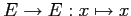
est clairement bijective et est le neutre. Enfin, si
 est bijective, alors
est inversible et son inverse
est bijective, alors
est inversible et son inverse
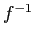
est aussi une bijection.
- 5.2.5
- fait en classe.
- 5.2.7
- Il suffit de prendre
et
.
- 5.2.8
- fait en classe.
- 5.2.9
- fait en classe.
- 5.2.10
- trivial.
- 5.3.2
- voir Éléments d'algèbre
- 5.3.6
- a)
-
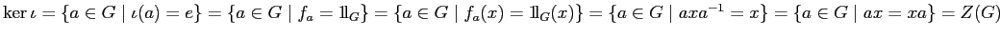
.
- b)
- Comme
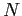
est normal dans
, il s'en suit que 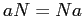
pour tout 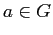
d'où
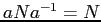
. Comme
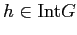
, on a que
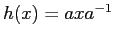
pour un certain
. Ainsi,
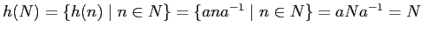
.
- 5.4.1
- a)
- Comme
 est un élément de
, un groupe, il existe
est un élément de
, un groupe, il existe
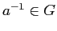
tel que
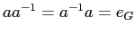
. Il est alors clair que
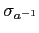
est l'inverse de 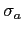
d'où la
bijectivité.
- b)
- Supposons
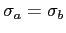
. Alors,
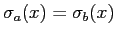
pour tout
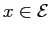
entraîne que
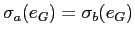
d'où 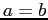
.
- c)
-
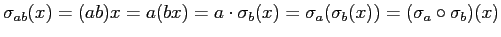
.
- 5.4.3
- fait en classe.
- 5.4.4
- Sont fidèles les actions des exemples 1, 3, 4 et
5.4.3.
- 5.4.5
- a)
- Comme
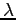
est un homomorphisme, on a que
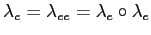
d'où on
tire
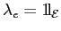
.
- b)
-
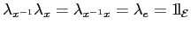
et
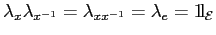
.
- 5.5.3
- fait en classe.
- 5.5.4
- Soit
l'action de
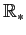
sur
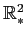
. On a que
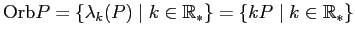
est la
droite passant par l'origine et par  . L'ensemble des orbites
correspond donc à l'ensemble des droites par l'origine.
. L'ensemble des orbites
correspond donc à l'ensemble des droites par l'origine.
- 5.5.5
- On a
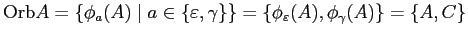
. De même,
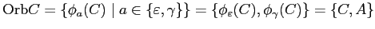
. Enfin,
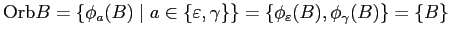
et
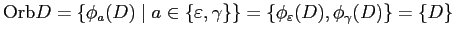
.
- 5.5.6
- a)
- Soit
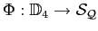
l'action de
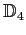
sur
. On a :
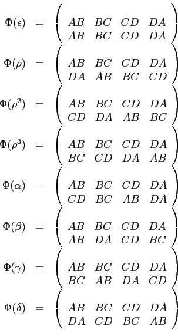
- b)
- Il n'y a qu'une seule orbite, à savoir
lui-même.
- c)
-
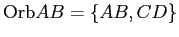
,
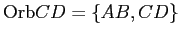
,
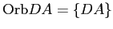
et enfin
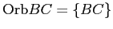
.
- d)
- trop long!
- 5.5.7
- On a
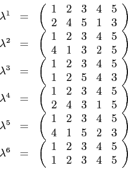
Ainsi,
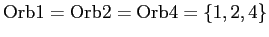
et
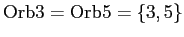
.
- 5.5.8
- a)
- Supposons que
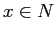
. On a
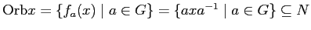
.
- b)
- Supposons que
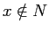
et qu'au contraire il existe
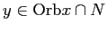
. Alors, 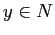
et  s'écrit
s'écrit
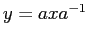
pour un certain
. Mais alors, isolant 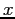
on obtient
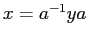
qui
est un élément de
puisque
est normal dans
. Ceci
contredit bien évidemment le fait que
.
- 5.6.3
- Pour qu'un coloriage demeure le même après rotation
autour de l'axe horizontale, il faut que les côtés
 et
aient la même couleur. Il y a donc un choix de couleur (parmi
quatre) pour la paire
et un choix de couleur (parmi
quatre) pour chacun des côtés
et
aient la même couleur. Il y a donc un choix de couleur (parmi
quatre) pour la paire
et un choix de couleur (parmi
quatre) pour chacun des côtés  et
, ce qui donne
choix. Le même raisonnement s'applique pour
et
, ce qui donne
choix. Le même raisonnement s'applique pour  .
.
Pour qu'un coloriage demeure le même après rotation autour de
l'axe BD, il faut que les côtés
et
aient la même couleur
et que les côtés
et
aient la même couleur. Il y a donc
un choix de couleur (parmi quatre) pour la paire
et un
choix de couleur (parmi quatre) pour la paire
, ce qui
donne
choix. Le même raisonnement s'applique pour
.
- 5.6.4
- 5.6.5
- Considérons l'action de
(le groupe de
Klein) sur
où
 est l'ensemble des
façons distinctes de peinturer le rectangle. Rappelons que
où
est l'identité,
est la rotation d'angle
est l'ensemble des
façons distinctes de peinturer le rectangle. Rappelons que
où
est l'identité,
est la rotation d'angle
 ,
est la symétrie par rapport au grand axe et
est la symétrie par rapport à l'autre axe.
,
est la symétrie par rapport au grand axe et
est la symétrie par rapport à l'autre axe.
Le nombre de façons essentiellement distinctes de peinturer le
rectangle est donc
.
- 5.6.6
- a)
- De la même façon que
agissait sur le
carré.
- b)
-
- c)
- Le nombre de façons essentiellement distinctes de peinturer le
triangle est donc
.
- d)
- Il faut cette fois non pas considérer l'action de
tout
sur l'ensemble des façons de colorer le
triangle, mais seulement l'action du sous-groupe
sur l'ensemble des façons de colorer le
triangle.
Le nombre de façons essentiellement distinctes de peinturer le
triangle devient alors
.
- 5.6.7
- Beaucoup trop long... Aucune chance d'être a l'examen
;-)
suivant: À propos de ce
Mario Lambert
2010-01-18